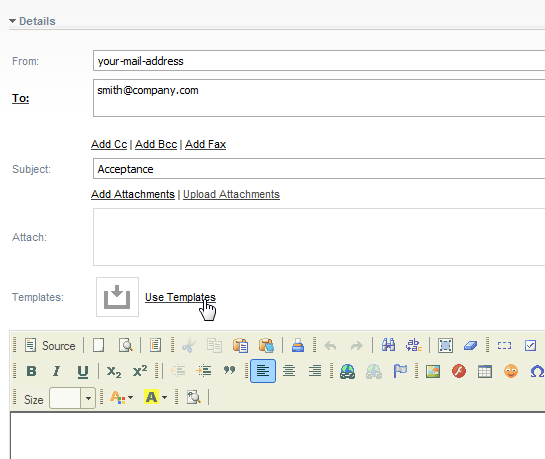

We like to notify the customer by creating appropriate correspondence. Stardust provides a prepared correspondence template, which we will upload to use as template for our correspondence. For details on creating correspondence in the Stardust portal refer to chapter Creating Correspondence of the End User Handbook.
If you have not already done so, download the zipped example sources for the Support Case example as described in section Example Sources of the main chapter The Support Case Example. Unzip the zip folder to a location of your choice. In folder dat you find the template Acceptance.html.
To upload the template Acceptance.html to our correspondence-templates folder:
The template opens with its content in the HTML document viewer. For details on viewing documents, refer to Viewing and Editing Documents of the End User Handbook.
You see the following tags marked with #{} that should be replaced with our process data when added to our process:
CustomerName and ProductName are the IN data mapping IDs we created for process Support Case Management with the according access paths for SupportCaseData.Name and SupportCaseData.Product.Name respectively.
Figure: Correspondence Template Content
Switch back to the My Documents view. Here you see the uploaded template under the correspondence-template folder.
Figure: Uploaded correspondence template
Now we will use this template to create the correspondence. To create the correspondence:

Congratulations ! You have completed the Stardust Developers Support Case Tutorial.